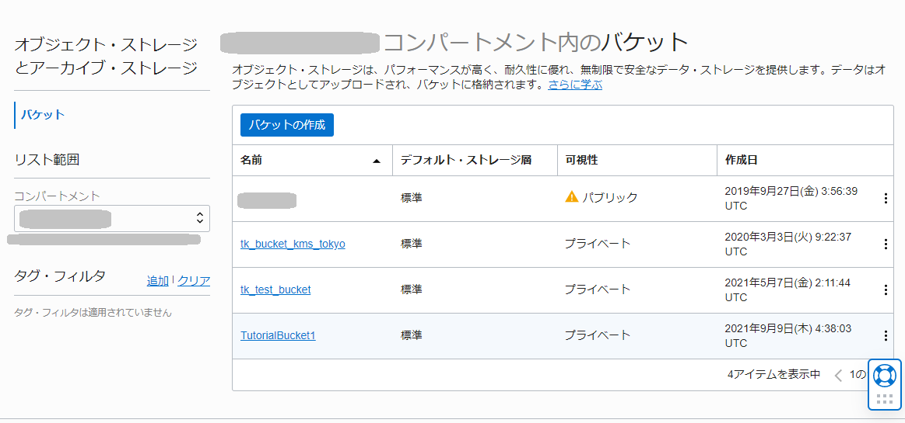
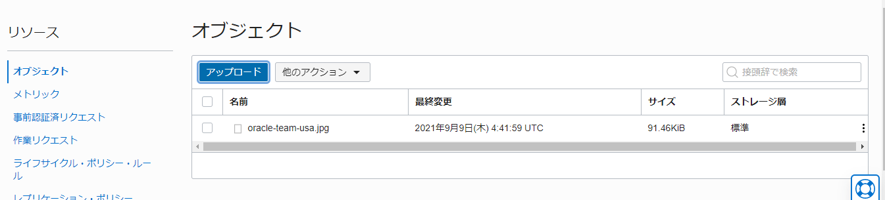

<!doctype html>
<!--
  Minimal Mistakes Jekyll Theme 4.24.0 by Michael Rose
  Copyright 2013-2020 Michael Rose - mademistakes.com | @mmistakes
  Free for personal and commercial use under the MIT license
  https://github.com/mmistakes/minimal-mistakes/blob/master/LICENSE
-->
<html lang="ja" class="no-js">
  <head>
    <meta charset="utf-8">

<!-- begin _includes/seo.html --><title>その7 - オブジェクト・ストレージを使う | Oracle Cloud Infrastructure チュートリアル</title>
<meta name="description" content="オブジェクト・ストレージを使うと、とても堅牢なデータストアを信じられないくらい安価に利用できます。まずは簡単な使い方を学びましょう">


  <meta name="author" content="Oracle Japan Solution Engineers">
  
  <meta property="article:author" content="Oracle Japan Solution Engineers">
  


<meta property="og:type" content="article">
<meta property="og:locale" content="ja_JP">
<meta property="og:site_name" content="Oracle Cloud Infrastructure チュートリアル">
<meta property="og:title" content="その7 - オブジェクト・ストレージを使う">
<meta property="og:url" content="https://oracle-japan.github.io/ocitutorials/beginners/object-storage/">


  <meta property="og:description" content="オブジェクト・ストレージを使うと、とても堅牢なデータストアを信じられないくらい安価に利用できます。まずは簡単な使い方を学びましょう">


  <meta property="og:image" content="https://oracle-japan.github.io/ocitutorials/beginners/object-storage/001.webp">


  <meta property="article:published_time" content="2022-10-28T17:26:19+09:00">


<link rel="canonical" href="https://oracle-japan.github.io/ocitutorials/beginners/object-storage/">


<script type="application/ld+json">
  {
    "@context": "https://schema.org",
    
      "@type": "Person",
      "name": null,
      "url": "https://oracle-japan.github.io/ocitutorials/"
    
  }
</script>


<!-- end _includes/seo.html -->


  <link href="/ocitutorials/feed.xml" type="application/atom+xml" rel="alternate" title="Oracle Cloud Infrastructure チュートリアル Feed">


<!-- https://t.co/dKP3o1e -->
<meta name="viewport" content="width=device-width, initial-scale=1.0">

<script>
  document.documentElement.className = document.documentElement.className.replace(/\bno-js\b/g, '') + ' js ';
</script>

<!-- For all browsers -->
<link rel="stylesheet" href="/ocitutorials/assets/css/main.css">
<link rel="preload" href="https://cdn.jsdelivr.net/npm/@fortawesome/fontawesome-free@5/css/all.min.css" as="style" onload="this.onload=null;this.rel='stylesheet'">
<noscript><link rel="stylesheet" href="https://cdn.jsdelivr.net/npm/@fortawesome/fontawesome-free@5/css/all.min.css"></noscript>


    <!-- start custom head snippets -->

<!-- insert favicons. use https://realfavicongenerator.net/ -->

<!-- end custom head snippets -->

  </head>

  <body class="layout--single">
    <nav class="skip-links">
  <ul>
    <li><a href="#site-nav" class="screen-reader-shortcut">Skip to primary navigation</a></li>
    <li><a href="#main" class="screen-reader-shortcut">Skip to content</a></li>
    <li><a href="#footer" class="screen-reader-shortcut">Skip to footer</a></li>
  </ul>
</nav>

    <!--[if lt IE 9]>
<div class="notice--danger align-center" style="margin: 0;">You are using an <strong>outdated</strong> browser. Please <a href="https://browsehappy.com/">upgrade your browser</a> to improve your experience.</div>
<![endif]-->

    

<div class="masthead">
  <div class="masthead__inner-wrap">
    <div class="masthead__menu">
      <nav id="site-nav" class="greedy-nav">
        
          <a class="site-logo" href="/ocitutorials/"></a>
        
        <a class="site-title" href="/ocitutorials/">
          OCI チュートリアル
          <span class="site-subtitle">Oracle Cloud Infrastructure を使ってみよう</span>
        </a>
        <ul class="visible-links"><li class="masthead__menu-item">
              <a href="/ocitutorials/#%E3%83%81%E3%83%A5%E3%83%BC%E3%83%88%E3%83%AA%E3%82%A2%E3%83%AB%E3%82%B3%E3%83%B3%E3%83%86%E3%83%B3%E3%83%84%E4%B8%80%E8%A6%A7">チュートリアル一覧</a>
            </li><li class="masthead__menu-item">
              <a href="/ocitutorials/about/">このサイトについて</a>
            </li></ul>
        
        <button class="search__toggle" type="button">
          <span class="visually-hidden">Toggle search</span>
          <i class="fas fa-search"></i>
        </button>
        
        <button class="greedy-nav__toggle hidden" type="button">
          <span class="visually-hidden">メニュー</span>
          <div class="navicon"></div>
        </button>
        <ul class="hidden-links hidden"></ul>
      </nav>
    </div>
  </div>
</div>


    <div class="initial-content">
      
  


<div class="page__hero--overlay"
  style=" background-image: linear-gradient(rgba(34, 66, 55, 0.7), rgba(34, 66, 55, 0.7)), url('/ocitutorials/beginners/object-storage/001.webp');"
>
  
    <div class="wrapper">
      <h1 id="page-title" class="page__title" itemprop="headline">
        
          その7 - オブジェクト・ストレージを使う

        
      </h1>
      
        <p class="page__lead">オブジェクト・ストレージを使うと、とても堅牢なデータストアを信じられないくらい安価に利用できます。まずは簡単な使い方を学びましょう
</p>
      
      


      
      
    </div>
  
  
</div>


  
    


<nav class="breadcrumbs">
  <ol itemscope itemtype="https://schema.org/BreadcrumbList">
    
    
    
      
        <li itemprop="itemListElement" itemscope itemtype="https://schema.org/ListItem">
          <a href="https://oracle-japan.github.io/ocitutorials/" itemprop="item"><span itemprop="name">ホーム</span></a>
          <meta itemprop="position" content="1" />
        </li>
        <span class="sep">></span>
      
      
        
        <li itemprop="itemListElement" itemscope itemtype="https://schema.org/ListItem">
          <a href="/ocitutorials/beginners" itemprop="item"><span itemprop="name">Beginners</span></a>
          <meta itemprop="position" content="2" />
        </li>
        <span class="sep">></span>
      
    
      
      
        <li class="current">その7 - オブジェクト・ストレージを使う</li>
      
    
  </ol>
</nav>

  


<div id="main" role="main">
  
  <div class="sidebar sticky">
  
  
    
      
      
      
      
    
    
      

<nav class="nav__list">
  
  <input id="ac-toc" name="accordion-toc" type="checkbox" />
  <label for="ac-toc">メニュー</label>
  <ul class="nav__items">
    <li>
      
      <a href=""><span class="nav__sub-title">入門編</span></a>
      <ul>
        
        
          <p></p><li><a href="/ocitutorials/beginners/acquiring-free-trial/">準備 - Oracle Cloud 無料トライアルを申し込む</a></li></p>
        
          <p></p><li><a href="/ocitutorials/beginners/getting-started/">その1 - OCIコンソールにアクセスして基本を理解する</a></li></p>
        
          <p></p><li><a href="/ocitutorials/beginners/creating-vcn/">その2 - クラウドに仮想ネットワーク(VCN)を作る</a></li></p>
        
          <p></p><li><a href="/ocitutorials/beginners/creating-compute-instance/">その3 - インスタンスを作成する</a></li></p>
        
          <p></p><li><a href="/ocitutorials/beginners/attaching-block-volume/">その4 - ブロック・ボリュームをインスタンスにアタッチする</a></li></p>
        
          <p></p><li><a href="/ocitutorials/beginners/managing-instance-lifecycle/">その5 - インスタンスのライフサイクルを管理する</a></li></p>
        
          <p></p><li><a href="/ocitutorials/beginners/using-file-storage/">その6 - ファイルストレージサービス(FSS)で共有ネットワークボリュームを利用する</a></li></p>
        
          <p></p><li><a href="/ocitutorials/beginners/object-storage/" class="active">その7 - オブジェクト・ストレージを使う</a></li></p>
        
          <p></p><li><a href="/ocitutorials/beginners/using-oracle-database/">その8 - クラウドでOracle Databaseを使う</a></li></p>
        
          <p></p><li><a href="/ocitutorials/beginners/creating-mds/">その9 - クラウドでMySQL Databaseを使う</a></li></p>
        
          <p></p><li><a href="/ocitutorials/beginners/creating-HeatWave/">その10 - MySQLで高速分析を体験する</a></li></p>
        
          <p></p><li><a href="/ocitutorials/beginners/alwaysfree/">Always Freeで快適DBアプリ開発環境を構築する</a></li></p>
        
      </ul>
    </li>
  </ul>
</nav>
    
  
  </div>


  <article class="page" itemscope itemtype="https://schema.org/CreativeWork">
    <meta itemprop="headline" content="その7 - オブジェクト・ストレージを使う">
    <meta itemprop="description" content="オブジェクト・ストレージを使うと、とても堅牢なデータストアを信じられないくらい安価に利用できます。まずは簡単な使い方を学びましょう">
    <meta itemprop="datePublished" content="2022-10-28T17:26:19+09:00">
    

    <div class="page__inner-wrap">
      

      <section class="page__content" itemprop="text">
        
          <aside class="sidebar__right sticky">
            <nav class="toc">
              <header><h4 class="nav__title"><i class="fas fa-file-alt"></i> 目次</h4></header>
              <ul class="toc__menu"><li><a href="#1-コンソール画面の確認とバケットの作成">1. コンソール画面の確認とバケットの作成</a></li><li><a href="#2-オブジェクトのアップロードダウンロード">2. オブジェクトのアップロード、ダウンロード</a></li><li><a href="#3-事前認証済リクエストの作成">3. 事前認証済リクエストの作成</a></li></ul>

            </nav>
          </aside>
        
        <p><strong>チュートリアル一覧に戻る :</strong> <a href="..">入門編 - Oracle Cloud Infrastructure を使ってみよう</a></p>

<p>Oracle Cloud Infrastructureオブジェクト・ストレージ・サービスは、高い信頼性と高い費用対効果を両立するスケーラブルなクラウドストレージです。
オブジェクト・ストレージを利用すると、分析用のビッグ・データや、イメージやビデオ等のリッチ・メディア・コンテンツなど、あらゆるコンテンツ・タイプの非構造化データを無制限に保管できます。</p>

<p>オブジェクト・ストレージはリージョン単位のサービスで、コンピュート・インスタンスからは独立して動作します。
ユーザーはオブジェクト・ストレージのエンドポイントに対し、OCIの内部、外部を問わずどこからでもアクセスすることができます。
OCIのIdentity and Access Management(IAM)機能をを利用した適切なアクセスコントロールや、リソース・リミットを設定することも可能です。</p>

<p>この章では、コンソール画面からオブジェクト・ストレージにアクセスし、スタンダード・バケットの作成やオブジェクトのアップロード、ダウンロードなどの基本的な操作、また事前認証リクエストを作成して一般ユーザー向けにダウンロードリンクを生成する手順について学習します。</p>

<ul>
  <li><strong>所要時間</strong> : 15分</li>
  <li><strong>前提条件</strong> : 適切なコンパートメント(ルート・コンパートメントでもOKです)と、そこに対する適切なオブジェクト・ストレージの管理権限がユーザーに付与されていること</li>
  <li><strong>注意</strong> : チュートリアル内の画面ショットについてはOracle Cloud Infrastructureの現在のコンソール画面と異なっている場合があります</li>
  <li>
    <p><strong>参考動画：</strong>本チュートリアルの内容をベースとした定期ハンズオンWebinarの録画コンテンツです。操作の流れや解説を動画で確認したい方はご参照ください。</p>

    <ul>
      <li><a href="https://videohub.oracle.com/media/Oracle+Cloud+Infrastructure+%E3%83%8F%E3%83%B3%E3%82%BA%E3%82%AA%E3%83%B3+-+7.%E3%82%AA%E3%83%96%E3%82%B8%E3%82%A7%E3%82%AF%E3%83%88%E3%83%BB%E3%82%B9%E3%83%88%E3%83%AC%E3%83%BC%E3%82%B8/1_fngpu5mo">Oracle Cloud Infrastructure ハンズオン - 7.オブジェクト・ストレージ</a></li>
    </ul>
  </li>
</ul>

<h1 id="1-コンソール画面の確認とバケットの作成">1. コンソール画面の確認とバケットの作成</h1>

<p>オブジェクト・ストレージ・サービスにおいて、バケットはオブジェクトを格納する箱として機能します。
バケットはコンパートメントに紐付ける必要があり、バケットおよびその中のオブジェクトに対する操作に関する権限は、コンパートメントのポリシーを通じて制御します。</p>

<p>まず、コンソール画面からバケットを作成していきます。</p>

<ol>
  <li>
    <p>コンソールメニューから <strong>ストレージ → オブジェクト・ストレージとアーカイブ・ストレージ</strong> を選択し、<strong>バケットの作成</strong> ボタンを押します</p>
  </li>
  <li>立ち上がった <strong>バケットの作成</strong> ウィンドウに以下の項目を入力し、<strong>バケットの作成</strong> ボタンを押します。指定がないものは任意の値でOKです。
    <ul>
      <li><strong>バケット名</strong> - 任意の文字列 (画面では TutorialBucket1 と入力しています)</li>
      <li><strong>デフォルト・ストレージ層</strong> - <em>標準</em> を選択</li>
      <li><strong>自動階層化の有効化</strong> - チェックなし</li>
      <li><strong>オブジェクト・バージョニングの有効化</strong> - チェックなし</li>
      <li><strong>オブジェクト・イベントの出力</strong>  - チェックなし</li>
      <li><strong>コミットされていないマルチパート・アップロードのクリーンアップ</strong> - チェックなし</li>
      <li><strong>暗号化</strong> - <em>ORACLE管理キーを使用した暗号化</em> を選択<br />
 </li>
    </ul>
  </li>
  <li>バケットの作成が完了し、コンソールに表示されていることを確認します
 </li>
</ol>

<h1 id="2-オブジェクトのアップロードダウンロード">2. オブジェクトのアップロード、ダウンロード</h1>

<ol>
  <li>
    <p>作成したバケット名のリンクをクリックし、バケットの詳細画面を表示します</p>
  </li>
  <li>
    <p><strong>アップロード</strong> ボタンを押します</p>
  </li>
  <li>
    <p>立ち上がった <strong>オブジェクトのアップロード</strong> ウィンドウで <strong>ファイルを選択</strong> リンクを押してローカルPCのファイルを選択するか、またはドラッグ&amp;ドロップでファイルをウィンドウの 「ここにファイルをドロップします」という場所にドロップします</p>

    <p></p>
  </li>
  <li>
    <p>必要に応じて <strong>オブジェクト名の接頭辞</strong> を入力し、<strong>アップロード</strong> ボタンを押します。ファイル名に日本語が含まれる場合は、ここをASCII文字で設定することを推奨します。</p>

    <blockquote>
      <p><strong>TIPS</strong><br />
オブジェクト名の接頭辞は、後からこのオブジェクトにアクセスする際のURIパスに含まれるため、わかりやすい名称をつけるようにしてください。
UNICODE文字であれば日本語でも可能ですが、アクセス時にクライアント側でURLエンコード処理を行う必要があります。
オブジェクト名の命名についての詳細は、マニュアルの <a href="https://docs.cloud.oracle.com/ja-jp/iaas/Content/Object/Tasks/managingobjects.htm#namerequirements">オブジェクトの管理 - オブジェクト名</a> をご覧ください。</p>
    </blockquote>
  </li>
  <li>
    <p>オブジェクトが正しくアップロードされたことを確認します</p>

    <p></p>
  </li>
  <li>
    <p>アップロードしたオブジェクトの右側の ・・・ メニューから <strong>オブジェクト詳細の表示</strong> を選択し、オブジェクトの詳細情報を表示します</p>

    <p></p>
  </li>
  <li>
    <p><strong>ダウンロード</strong> ボタンを押して、オブジェクトが正しくダウンロードできることを確認します</p>
  </li>
</ol>

<h1 id="3-事前認証済リクエストの作成">3. 事前認証済リクエストの作成</h1>

<p>事前認証リクエスト(Pre-Authenticated Request) は、Oracle Cloud Infrastructure の認証されたユーザー以外のメンバーに対して、オブジェクトへのアクセス権限を付与する際に利用します。</p>

<p>事前認証リクエストは、バケット単位またはオブジェクト単位で作成でき、個別に読取、書込、読み書きの権限を設定することができ、また有効期限を設定することができます。リクエストを生成すると一意のランダムなアクセスURLが生成されます。</p>

<p>今回は、先ほどアップロードしたオブジェクトに対する読み取り権限を付与する事前認証リクエストを作成します。</p>

<ol>
  <li>
    <p>先ほどアップロードしたオブジェクトの右側の ・・・ メニューから <strong>事前認証済リクエストの作成</strong> を選択します</p>
  </li>
  <li>
    <p>立ち上がった <strong>事前認証済リクエストの作成</strong> ウィンドウに以下の項目を入力し、 <strong>事前認証済リクエストの作成</strong> ボタンを押します</p>

    <ul>
      <li><strong>名前</strong> - 任意 (画面上では TutorialPreAuthReq と入力しています)</li>
      <li><strong>事前認証済リクエスト・ターゲット</strong> - <em>オブジェクト</em> を選択</li>
      <li><strong>アクセス・タイプ</strong> - <em>オブジェクトに対する読み取りを許可</em> を選択</li>
      <li><strong>有効期限</strong> - デフォルトのまま</li>
    </ul>

    <p></p>
  </li>
  <li>
    <p>事前認証リクエストの作成が完了すると、リクエストURLが生成されます。ウィンドウに表示された情報を確認し、<strong>事前認証済リクエストのURL</strong> ボックスの右にあるアイコンをクリックして、URLをクリップボードにコピーします</p>

    <p></p>
  </li>
  <li>
    <p>別のブラウザを開き、コピーしたURLをアドレスバーにペーストします</p>

    <blockquote>
      <p><strong>TIPS</strong><br />
同じブラウザでもOKですが、OCIコンソールを操作しているものとは異なるブラウザ(例えば現在使用しているブラウザがFirefoxならChrome)を立ち上げることで、Oracle Cloud Infrastructure の認証をスキップしていることがより明確に理解できます</p>
    </blockquote>

    <p></p>

    <p>ファイルがダウンロードされ、事前認証済リクエストが正しく機能していることが確認できます。ここではオブジェクトが画像ファイルのためブラウザ上で画像表示ができています。</p>

    <blockquote>
      <p><strong>TIPS</strong><br />
ブラウザからアクセスした場合にファイルのダウンロードが行われず、ウィンドウ内で情報が表示される場合があります。
アクセス時の挙動については、ファイルタイプとブラウザの設定に依存します。</p>
    </blockquote>
  </li>
  <li>
    <p>作成済み事前認証済リクエストを確認します
コンソール画面に戻り、左下メニューから <strong>事前認証済リクエスト</strong> リンクを選択します。下部に先ほど作成した事前認証済リクエストが表示されます。</p>

    <p></p>
  </li>
  <li>
    <p>右側の ・・・ メニューから <strong>削除</strong> を選択し、先ほど作成した事前認証済リクエストを削除します</p>

    <p></p>
  </li>
  <li>
    <p>先ほどファイルをダウンロードした、別のブラウザに戻り、リロードボタンを押して再度ファイルのダウンロードを試みます</p>
  </li>
  <li>
    <p>以下のようなエラーメッセージが表示され、認証が拒否されたことを確認します</p>

    <p><code class="language-plaintext highlighter-rouge">{"code":"NotAuthenticated","message":"The required information to complete authentication was not provided."}</code></p>

    <p></p>
  </li>
</ol>

<p>以上で、この章の作業は終了です。</p>

<p><strong>チュートリアル一覧に戻る :</strong> <a href="..">入門編 - Oracle Cloud Infrastructure を使ってみよう</a></p>

        
      </section>

      <footer class="page__meta">
        
        


        

  <p class="page__date"><strong><i class="fas fa-fw fa-calendar-alt" aria-hidden="true"></i> 更新日時:</strong> <time datetime="2022-10-28T17:26:19+09:00">October 28, 2022</time></p>


      </footer>

      <section class="page__share">
  
    <h4 class="page__share-title">共有</h4>
  

  <a href="https://twitter.com/intent/tweet?text=%E3%81%9D%E3%81%AE7+-+%E3%82%AA%E3%83%96%E3%82%B8%E3%82%A7%E3%82%AF%E3%83%88%E3%83%BB%E3%82%B9%E3%83%88%E3%83%AC%E3%83%BC%E3%82%B8%E3%82%92%E4%BD%BF%E3%81%86%20https%3A%2F%2Foracle-japan.github.io%2Focitutorials%2Fbeginners%2Fobject-storage%2F" class="btn btn--twitter" onclick="window.open(this.href, 'window', 'left=20,top=20,width=500,height=500,toolbar=1,resizable=0'); return false;" title="共有 Twitter"><i class="fab fa-fw fa-twitter" aria-hidden="true"></i><span> Twitter</span></a>

  <a href="https://www.facebook.com/sharer/sharer.php?u=https%3A%2F%2Foracle-japan.github.io%2Focitutorials%2Fbeginners%2Fobject-storage%2F" class="btn btn--facebook" onclick="window.open(this.href, 'window', 'left=20,top=20,width=500,height=500,toolbar=1,resizable=0'); return false;" title="共有 Facebook"><i class="fab fa-fw fa-facebook" aria-hidden="true"></i><span> Facebook</span></a>

  <a href="https://www.linkedin.com/shareArticle?mini=true&url=https%3A%2F%2Foracle-japan.github.io%2Focitutorials%2Fbeginners%2Fobject-storage%2F" class="btn btn--linkedin" onclick="window.open(this.href, 'window', 'left=20,top=20,width=500,height=500,toolbar=1,resizable=0'); return false;" title="共有 LinkedIn"><i class="fab fa-fw fa-linkedin" aria-hidden="true"></i><span> LinkedIn</span></a>
</section>


      
  <nav class="pagination">
    
      <a href="/ocitutorials/beginners/using-file-storage/" class="pagination--pager" title="その6 - ファイルストレージサービス(FSS)で共有ネットワークボリュームを利用する
">前へ</a>
    
    
      <a href="/ocitutorials/beginners/using-oracle-database/" class="pagination--pager" title="その8 - クラウドでOracle Databaseを使う
">次へ</a>
    
  </nav>

    </div>

    
  </article>

  
  
    <div class="page__related">
      <h4 class="page__related-title">関連記事</h4>
      <div class="grid__wrapper">
        
      </div>
    </div>
  
</div>

    </div>

    
      <div class="search-content">
        <div class="search-content__inner-wrap"><form class="search-content__form" onkeydown="return event.key != 'Enter';">
    <label class="sr-only" for="search">
      Enter your search term...
    </label>
    <input type="search" id="search" class="search-input" tabindex="-1" placeholder="検索キーワードを入力してください..." />
  </form>
  <div id="results" class="results"></div></div>

      </div>
    

    <div id="footer" class="page__footer">
      <footer>
        <!-- start custom footer snippets -->

<!-- end custom footer snippets -->
        <div class="page__footer-follow">
  <ul class="social-icons">
    
      <li><strong>フォロー</strong></li>
    

    
      
        
          <li><a href="https://twitter.com/#ocijp" rel="nofollow noopener noreferrer"><i class="fab fa-fw fa-twitter-square" aria-hidden="true"></i> Twitter</a></li>
        
      
        
          <li><a href="https://github.com/oracle-japan" rel="nofollow noopener noreferrer"><i class="fab fa-fw fa-github" aria-hidden="true"></i> GitHub</a></li>
        
      
    

    
      <li><a href="/ocitutorials/feed.xml"><i class="fas fa-fw fa-rss-square" aria-hidden="true"></i> Feed</a></li>
    
  </ul>
</div>

<div class="page__footer-copyright">&copy; 2022 Oracle Cloud Infrastructure チュートリアル. Powered by <a href="https://jekyllrb.com" rel="nofollow">Jekyll</a> &amp; <a href="https://mademistakes.com/work/minimal-mistakes-jekyll-theme/" rel="nofollow">Minimal Mistakes</a>.</div>

      </footer>
    </div>

    
  <script src="/ocitutorials/assets/js/main.min.js"></script>


<script src="/ocitutorials/assets/js/lunr/lunr.min.js"></script>
<script src="/ocitutorials/assets/js/lunr/lunr-store.js"></script>
<script src="/ocitutorials/assets/js/lunr/lunr-en.js"></script>


  <!-- Global site tag (gtag.js) - Google Analytics -->
<script async src="https://www.googletagmanager.com/gtag/js?id=G-6W7FEC5CEH"></script>
<script>
  window.dataLayer = window.dataLayer || [];
  function gtag(){dataLayer.push(arguments);}
  gtag('js', new Date());

  gtag('config', 'G-6W7FEC5CEH', { 'anonymize_ip': false});
</script>


  
    <script src="https://cdn.jsdelivr.net/npm/clipboard@2/dist/clipboard.min.js"></script>
  
    <script src="/ocitutorials/assets/js/clipboardrouge.js"></script>
  
    <script src="/ocitutorials/assets/js/tabs.js"></script>
  
    <script src="/ocitutorials/assets/js/sidebar.js"></script>
  


  </body>
</html>
